I build production Flutter apps end to end — architecture, state management, testing, and what actually ships to the App Store and Play Store — usually as the first or only mobile engineer on the team. 4+ years in, almost all of that ownership has come from startups, where there's no one else to hand the hard calls to. My focus now sits at the intersection of Flutter and AI: LLM integration, agentic app patterns, and on-device inference. I can write a basic FastAPI service in Python when a project needs a lightweight backend to go with the AI work — but Flutter is where the depth is, and where I want to keep building it.
I'm a Flutter developer based in Berlin with 4+ years building and shipping production apps end to end — architecture, state management (BLoC, Riverpod, GetX), clean/SOLID structuring, and everything it takes to get an app through the App Store and Play Store. Almost all of that has been at startups, usually as the only mobile engineer, which means owning the decisions & wearing multiple hats at once. That's the core of what I do, and it's where I'm strongest.
My background is in computer vision and deep learning (M.Tech), and that's what keeps pulling me toward the intersection of Flutter and AI: LLM integration, agentic app patterns, on-device inference,. I also write basic Python and FastAPI services when a project needs a lightweight backend for that AI work; it's a real but secondary skill, not something I'd claim backend-engineer-level depth in.
A lot of my recent projects happen to be in health-tech and femtech — not by accident, but because the constraints (privacy, real-time data, offline-first design) are genuinely interesting to build for. I'm targeting Flutter / mobile engineer roles in the German tech market where that Flutter-plus-AI combination is useful.
Led architecture improvements across multiple farmer-facing Flutter apps — feature-based SOLID architecture, real-time land polygon mapping, and geospatial boundary capture for agricultural planning.
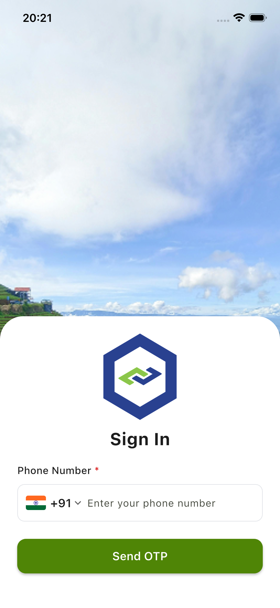
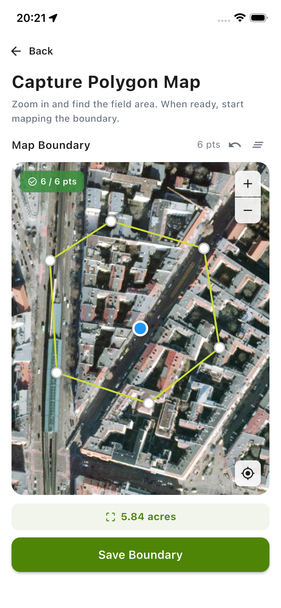
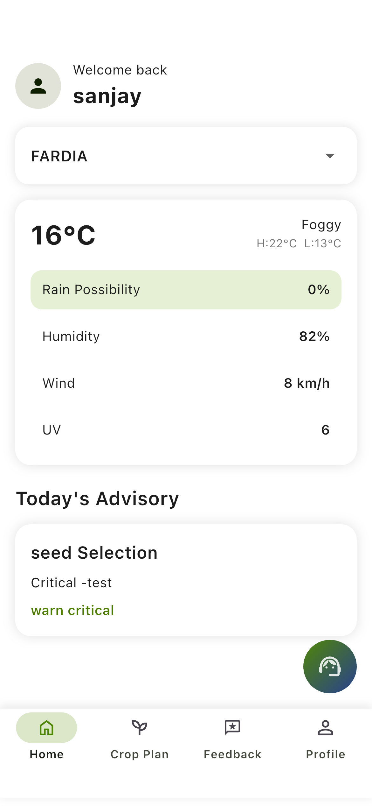
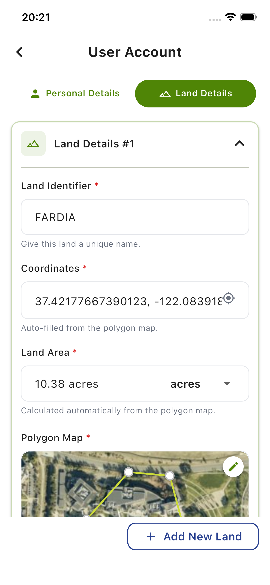
A daily symptom-journaling app that turns a week of entries into structured, on-device AI insights — parsed into cards like "Your Week in Words" and "What Helped on Better Days" — plus a 7-day multi-metric trend chart and a shareable PDF. Runs fully locally with flutter_gemma (Qwen3, LiteRT/int4 quantized): nothing leaves the device.
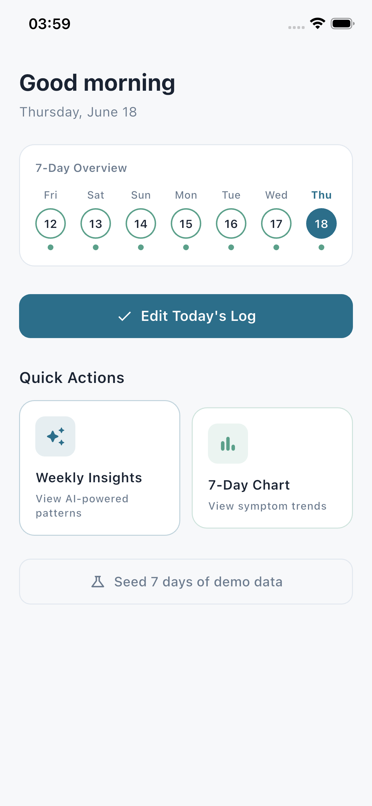
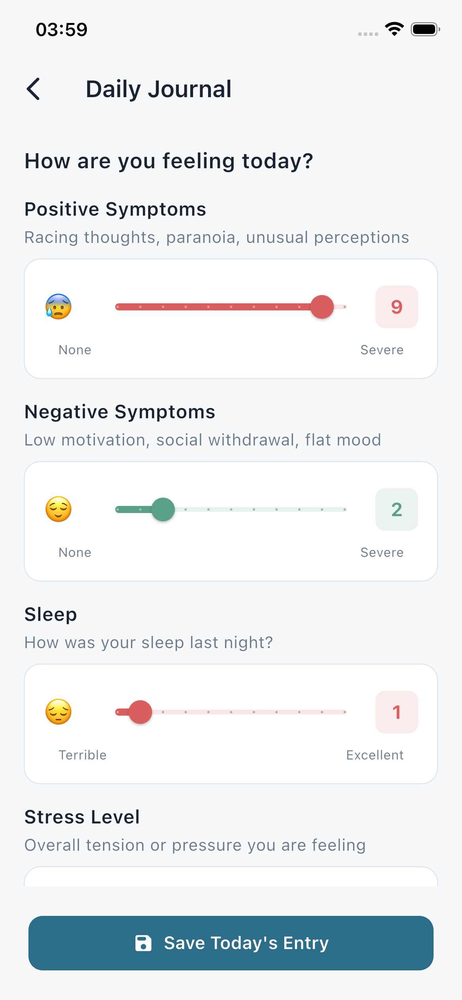
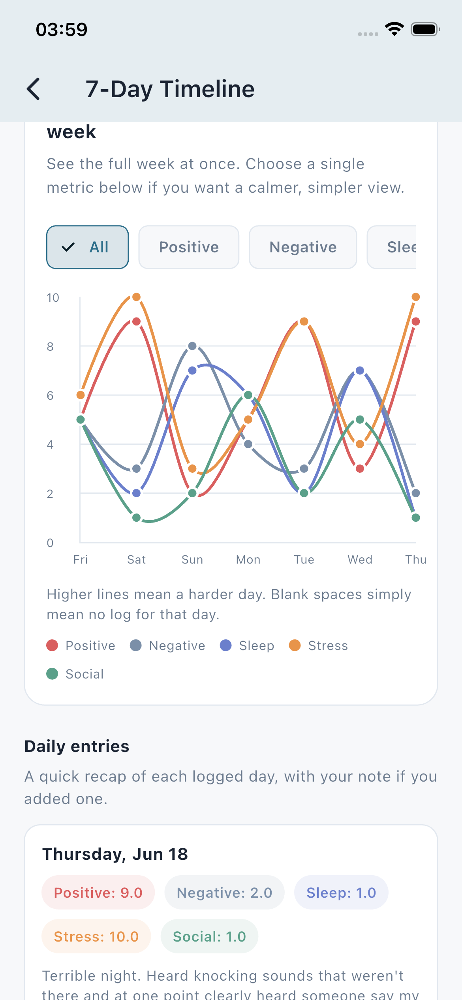
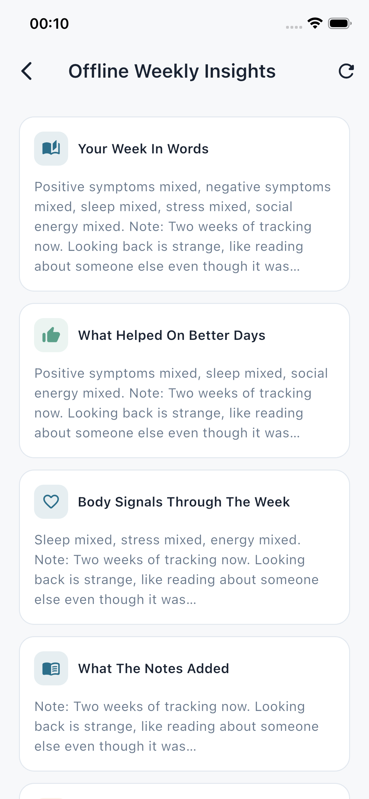
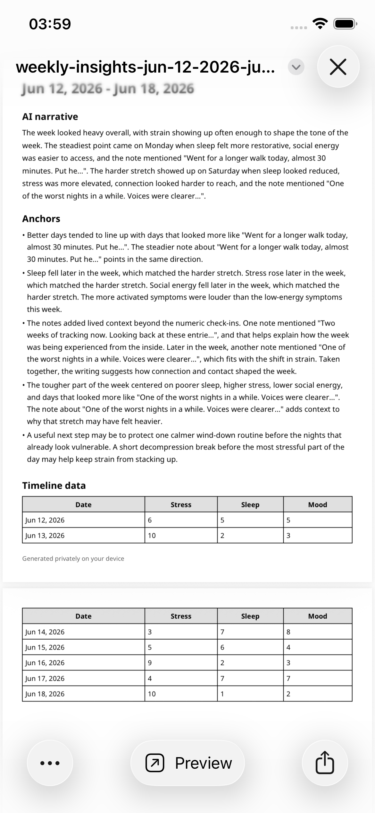
A women-focused social networking platform — secure authentication, real-time chat, and location-aware, interest-based matching. Contributing GDPR-conscious architecture: privacy-first data handling and consent-aware feature design.
An on-demand medical courier delivery app for health systems — live GPS tracking, route optimization, and fleet assignment. Supported early development, then led the Flutter 3.0 migration and offline-first order handling.
A social dating-manager app built from scratch — real-time chat with GraphQL subscriptions, like/share/comment, push notifications, and dynamic invite links.
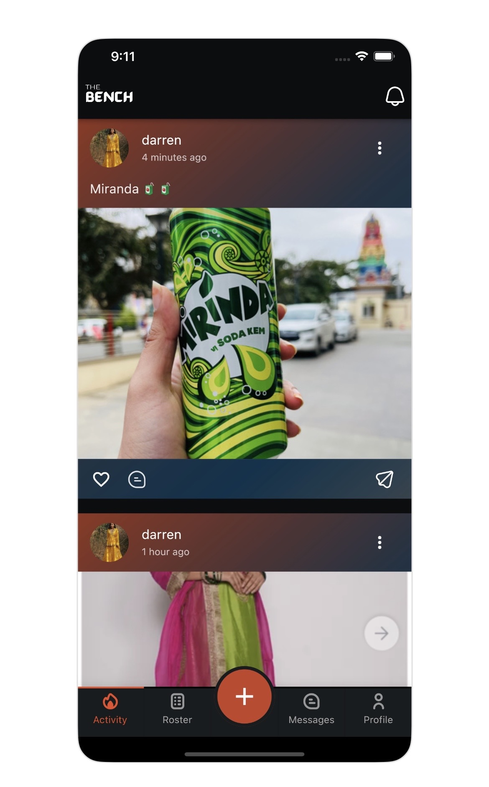
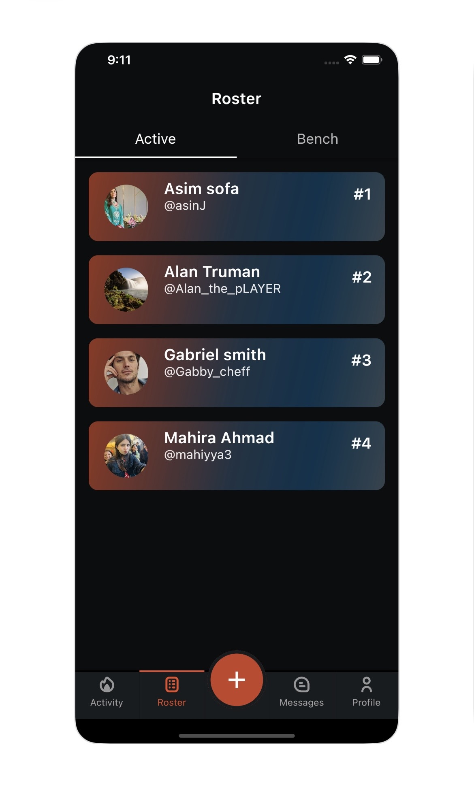
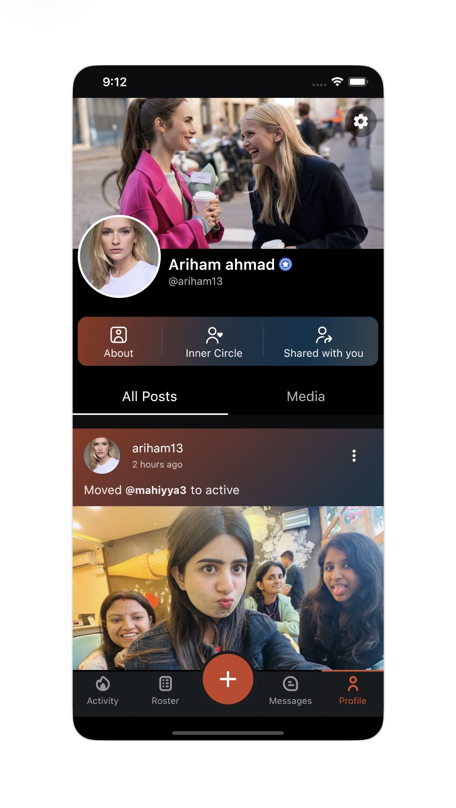
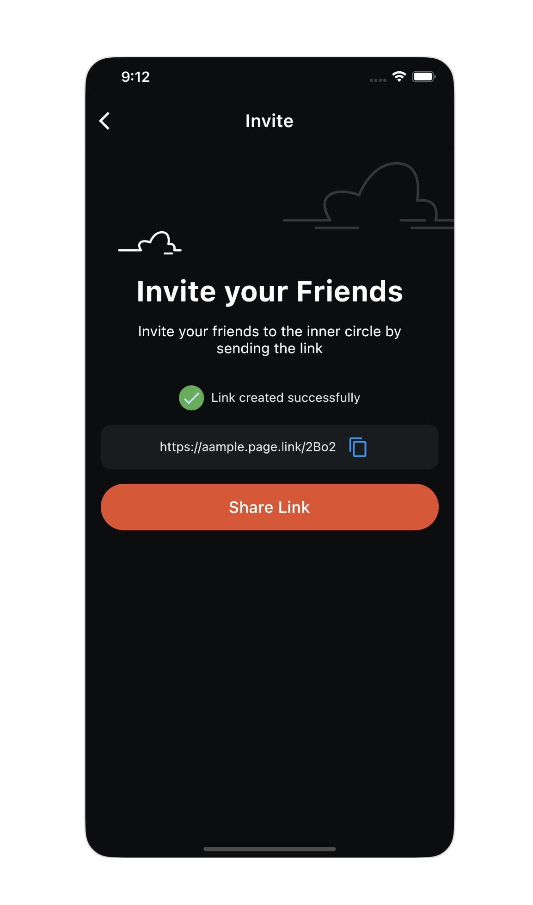
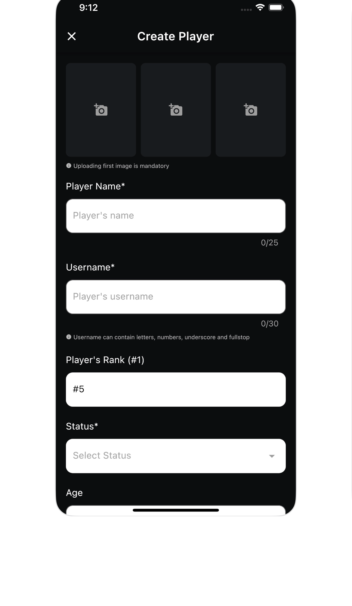
Led end-to-end development of a medicine reminder and management app — clean architecture, BLoC, and advanced background notification scheduling with WorkManager for reliable reminders. Shipped to both the App Store and Play Store.
Migrated an existing teleconsultation app to Flutter, including one-to-one video calling and a Firebase Cloud Functions backend built from scratch.